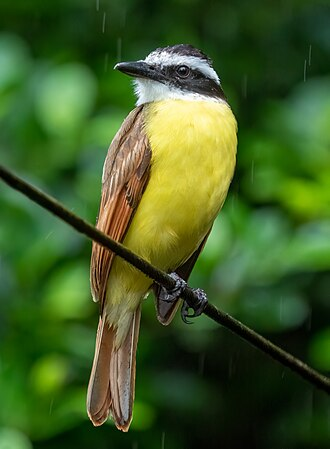

Pássaros são animais vertebrados que possuem penas, bico e asas.
Elas podem viver em diferentes ambientes, como florestas, cidades e
campos.
Algumas espécies voam longas distâncias, enquanto outras permanecem em
regiões específicas.

